Тайны бумажных денег : немного о защите банкнот

Надежность всеобщего экономического эквивалента, коим являются деньги, волнует человечество со времени их появления. С началом обращения бумажных денег и распространения ценных бумаг проблема фальшивомонетничества надолго, если не навсегда, вошла в нашу жизнь.
Наилучшей собственной защитой является качество денежных знаков. Оригинальные методы печати и первоклассные материалы делают задачу подделки настолько трудной и дорогой, что такие действия теряют смысл. Поэтому, чтобы исключить возможность фальшивомонетничества, большинство государств идут по пути совершенствования защиты бумажных денег.
Как отличить подлинный платежный билет от фальсификации? Для ответа на этот вопрос рассмотрим, какие существуют способы защиты банкнот и какими средствами распознавания подлинности может быть решена эта задача.
Достаточно условно способы защиты банкнот и ценных бумаг можно разбить на две группы:
- Органолептические - выявляются органами чувств человека (визуальные и полиграфические защитные признаки
- Машиночитаемые - сугубо индивидуальные физические образы для каждого вида, номинала, года выпуска банкнот, которые могут быть определены исключительно с помощью специальных приборов
Органолептические защитные признаки банкнот
Защитным признакам, относящимся к органолептической группе столько лет, сколько печатаются банкноты, а совершенствование этих видов защиты продолжается и по сей день.
В этой группе признаков ведущее место занимают визуальные, среди которых:
| Банкнотная бумага 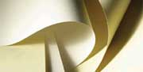 Специальные пигменты придают ей оригинальный цвет, а добавки различных натуральных волокон (льна, хлопка, шелка) специфическую износостойкость, жесткость и звонкость. В отраженных ультрафиолетовых лучах банкнотная бумага не люминесцирует, что отличает ее от обычной бумаги. |
| Водяной знак 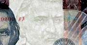 Видимое при рассмотрении на просвет изображение, которое создано внутренней структурой бумаги. Существуют несколько видов водяных знаков: светлые, темные, двутоновые, многотоновые; по расположению на банкноте: локальные, общие и бегущие |
| Цветные волокна и конфетти 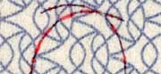 На стадии отлива бумаги в нее добавляют тончайшие цветные шелковые волокна, способные люминесцировать в отраженных ультрафиолетовых и инфракрасных лучах, а так же более крупные частицы или конфетти визуально легко контролируемые |
| Защитная нить (лента) 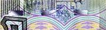 Введение синтетических либо металлизированных нитей (сплошных или ныряющих) в бумажное полотно еще на стадии его отлива существенно усложняет подделку банкнот. |
| Kipp-эффекты и голографические изображения 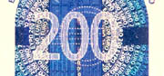 Пространственный характер глубокой печати скрытых изображений, который распознается при изучении банкноты под соответствующим углом падения или отражения света |
| Совмещающиеся изображения 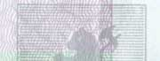 Печать лицевой и обратной стороны банкноты с обеспечением точного их совмещения или дополнения |
| 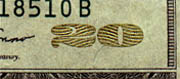 Эффект «овиай»Эффект изменения цвета отдельных элементов или целых изображений в зависимости от угла зрения |
| «Oрловская» печать 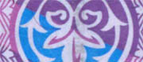 Относится к полиграфическим защитным элементам и выражен в четком и резком изменении одного цвета в другой без разрыва и смещения линий рисунка |
| «Ирисный» раскат 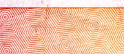 Полиграфический элемент в виде плавного перехода одного цвета линий защитной сетки в другой |
| Антисканерная сетка 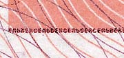 Сетка тонких линии, при копировании или сканировании банкнот создает на копии «муаровый» эффект |
| «Тактильная» печать 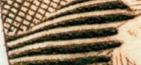 Полиграфический элемент с тактильным ощущение рисунка - высокая и глубокая печать позволяющая создавать печатные элементы, воспринимаемые на ощупь |
| Микропечать 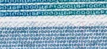 Печать отдельных элементов (чаще слов или целых фраз) высотой до 0.5 мм, что позволяет рассмотреть их при увеличении не менее чем в 7 раз |
| Микроперфорация 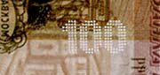 Лазерная высечка изображений в виде микроскопических сквозных отверстий |
Визуальные защитные признаки предназначены для контроля подлинности банкнот преимущественно в повседневном массовом обращении, когда количество денежных билетов ограничено, имеется достаточно времени для проверки и отсутствуют приборы контроля.
Следует отметить, что фальшивки «среднего уровня», как правило, достаточно хорошо производят в первую очередь именно визуальные защитные признаки банкнот, поэтому органолептический контроль требует специальных знаний и наблюдательности.
Машиночитаемые защитные признаки банкнот
Все большее развитие в последние годы получают машиночитаемые защитные
признаки, представляющие собой запрограммированные комбинации красок с
разными физическими свойствами, распределенные по банкноте в строго
определенном порядке и создающие легко опознаваемые образы в какой-либо
области спектра. Машиночитаемые защитные признаки образуются путем введения в краски специальных добавок и вносятся в банкноты с использованием уникального полиграфического оборудования, существующего в единичных экземплярах и находящегося во всех странах под государственным контролем. К таким признакам относятся: |
| Ультрафиолетовая защита 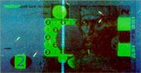 Защита банкнот люминофорами - красками, флуоресцирующими при ультрафиолетовом освещении (рисунки и окрашенные волокна). Распознавание таких люминесцентных красок в большей степени рассчитано на визуальное восприятие, т. к. спектр излучения из невидимой ультрафиолетовой области фактически переносится в видимую область соответствующего цвета |
| Магнитная защита 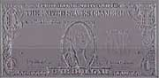 Защита банкнот красками содержащими магнитные пигменты, которые наносятся в отдельных областях банкноты со строго определенным порядком чередования |
| Инфракрасная защита 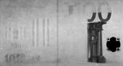 Защита банкнот нанесением метамерных красок, имеющих различную отражающую способность в инфракрасном излучении (области банкнот различающиеся по цвету при использовании ИК-излучения и выглядящие одинаково при обычном освещении). Из всех известных средств защиты денежных знаков, пока фальшивомонетчикам ни разу не удалось воспроизвести ИК-защиту банкнот |
Выявить наличие подобных физических свойств и их распределение по банкноте можно только с помощью специальных приборов.
Важно отметить, что соответствующие физические образы банкнот носят сугубо индивидуальный характер как для каждого вида валюты и номинала, так и для года выпуска. Краски с другими физическими свойствами могут быть обнаружены только с помощью специально разработанных датчиков и приборов, равно как и особые признаки бумаги и красок, являющиеся принадлежностью исключительно подлинных банкнот.
Таким образом, физические образы машиночитаемых защитных признаков предоставляют мощный инструмент для дополнительного кодирования банкнот, причем инструмент уникальный и практически не воспроизводимый с помощью любого из видов доступного для фальшивомонетчиков копировально-множительного и полиграфического оборудования.
По материалам сайта : http://elcom.net.ua/